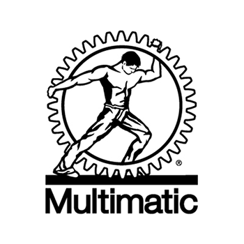

Some of my past coop experiences!

Multimatic Inc (Summer 2023)

During my co-op experience at Multimatic Inc. as a Business Solutions Analyst, I had the privilege of contributing to the dynamic world of automotive technology. Multimatic's global influence as a provider of engineered components, systems, and services in the automotive industry gave me a comprehensive understanding of their intricate IT landscape, spanning across diverse divisions and countries. My core responsibilities included meticulously evaluating existing IT processes, with a keen eye for spotting opportunities to streamline manual tasks through automation. Serving as a liaison for the Business Solutions team, I championed the merits of the Microsoft Power Automation platform, propelling continuous improvement initiatives throughout the IT domain. I took charge of the day-to-day upkeep of the Power platform, ensuring seamless functionality for Microsoft automation use cases already deployed in production. My role extended to crafting enhancements and scripts that elevated out-of-the-box functionality to meet the specific demands of Multimatic. A collaborative approach saw me partnering with various IT teams to pinpoint operational challenges ripe for automation, thus bolstering efficiency. Regular progress updates were conveyed through engaging project standup meetings, fostering transparency and synergy. In collaboration with IT leadership, I facilitated the review, prioritization, and scheduling of fresh automation use cases, orchestrating illuminating feature demonstrations and insightful postmortem reviews. An overarching responsibility was ensuring that all automation endeavors aligned harmoniously with Multimatic's IT Strategy and Guiding Principles, a process further enriched by collaboration with the IT Security team to guarantee the meticulous evaluation and endorsement of all automation endeavors before their migration to the production environment. I am immensely grateful for the opportunity to acquire these invaluable skills and insights during my time at Multimatic, and I eagerly anticipate applying them to future roles, continuing to drive innovation and efficiency

Summer 2024
This section is a work in progress. Come back later!
Summer 2025
This section is a work in progress. Come back later!